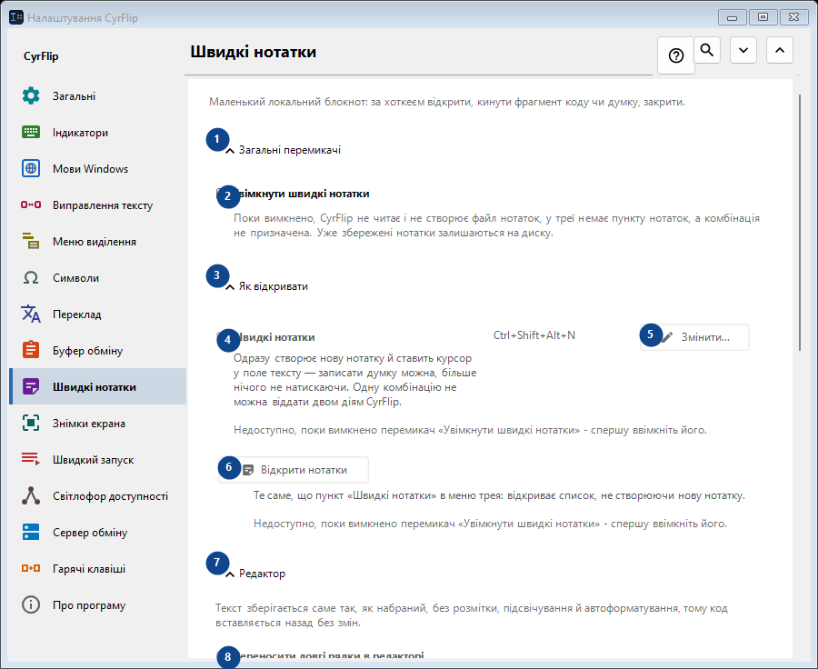
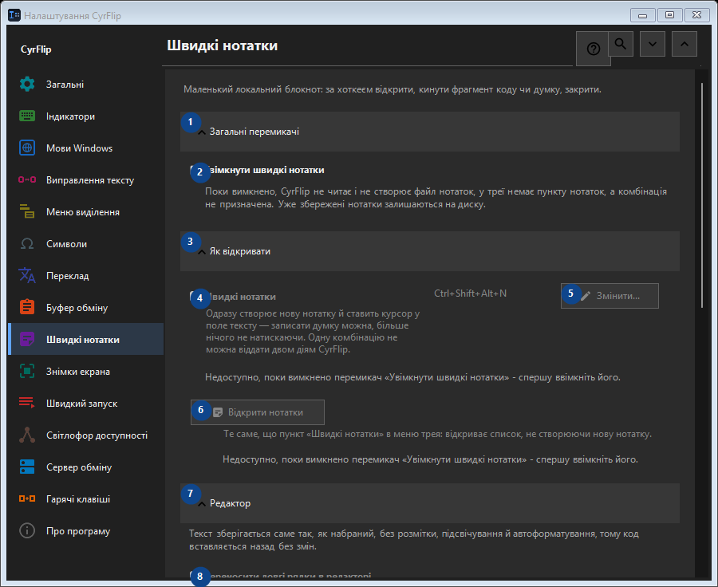

Швидкі нотатки
Для чого це вікно
Маленький локальний блокнот: за хоткеєм відкрити, кинути фрагмент коду чи думку, закрити.


Порядок дій
Налаштування застосовуються одразу. Обов’язкового порядку немає; користуйтеся групами нижче.
Елементи
1. Загальні перемикачі
Скористайтеся командою, коли потрібна вказана дія. Прочитайте запит підтвердження перед згодою.
Ваші сполучення клавіш2. Увімкнути швидкі нотатки
Поки вимкнено, CyrFlip не читає і не створює файл нотаток, у треї немає пункту нотаток, а комбінація не призначена. Уже збережені нотатки залишаються на диску.
Ваші сполучення клавіш3. Як відкривати
Скористайтеся командою, коли потрібна вказана дія. Прочитайте запит підтвердження перед згодою.
Ваші сполучення клавіш4. Швидкі нотатки
Недоступно, поки вимкнено перемикач «Увімкнути швидкі нотатки» - спершу ввімкніть його. Елемент зараз недоступний. Спочатку ввімкніть функцію або виберіть запис.
Ваші сполучення клавіш5. Змінити - Швидкі нотатки
Недоступно, поки вимкнено перемикач «Увімкнути швидкі нотатки» - спершу ввімкніть його. Елемент зараз недоступний. Спочатку ввімкніть функцію або виберіть запис.
Ваші сполучення клавіш6. Відкрити нотатки
Недоступно, поки вимкнено перемикач «Увімкнути швидкі нотатки» - спершу ввімкніть його. Елемент зараз недоступний. Спочатку ввімкніть функцію або виберіть запис.
Ваші сполучення клавіш7. Редактор
Скористайтеся командою, коли потрібна вказана дія. Прочитайте запит підтвердження перед згодою.
Ваші сполучення клавіш8. Переносити довгі рядки в редакторі
Недоступно, поки вимкнено перемикач «Увімкнути швидкі нотатки» - спершу ввімкніть його. Елемент зараз недоступний. Спочатку ввімкніть функцію або виберіть запис.
Ваші сполучення клавіш9. Експорт і зберігання
Скористайтеся командою, коли потрібна вказана дія. Прочитайте запит підтвердження перед згодою.
Ваші сполучення клавіш10. Додавати дати під час експорту
Недоступно, поки вимкнено перемикач «Увімкнути швидкі нотатки» - спершу ввімкніть його. Елемент зараз недоступний. Спочатку ввімкніть функцію або виберіть запис.
Ваші сполучення клавіш11. Експортувати всі нотатки в Markdown...
Недоступно, поки вимкнено перемикач «Увімкнути швидкі нотатки» - спершу ввімкніть його. Елемент зараз недоступний. Спочатку ввімкніть функцію або виберіть запис.
Ваші сполучення клавіш12. Видалити всі швидкі нотатки
Недоступно, поки вимкнено перемикач «Увімкнути швидкі нотатки» - спершу ввімкніть його. Елемент зараз недоступний. Спочатку ввімкніть функцію або виберіть запис.
Ваші сполучення клавіш13. Перенесення на інший комп'ютер
Скористайтеся командою, коли потрібна вказана дія. Прочитайте запит підтвердження перед згодою.
Ваші сполучення клавіш14. Експортувати...
Один відкритий текстовий файл із нотатками та вибраною історією буфера: його можна прочитати в будь-якому редакторі чи на телефоні та імпортувати в CyrFlip на іншому комп'ютері. Файл не шифрується. Імпорт показує, що буде додано, і нічого не видаляє.
Ваші сполучення клавіш15. Імпортувати...
Скористайтеся командою, коли потрібна вказана дія. Прочитайте запит підтвердження перед згодою.
Ваші сполучення клавіш